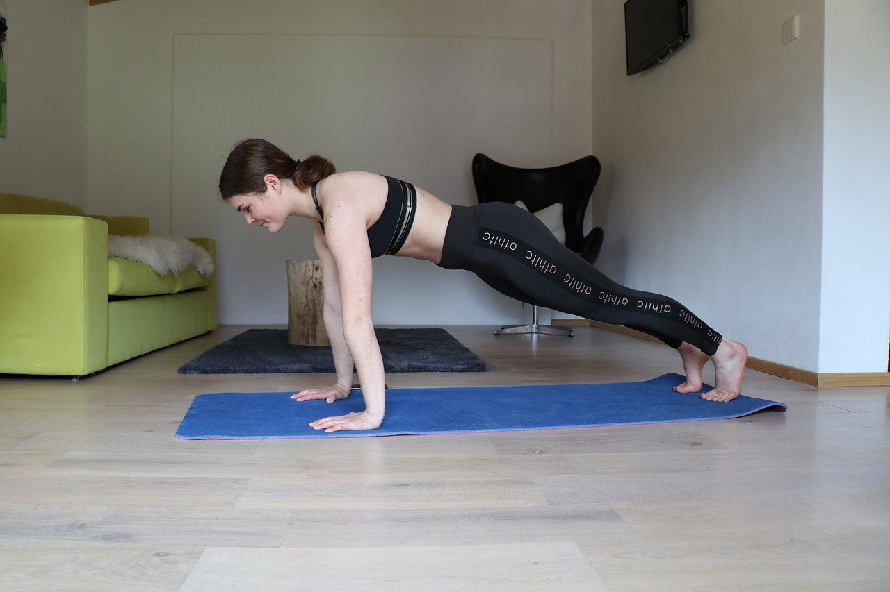
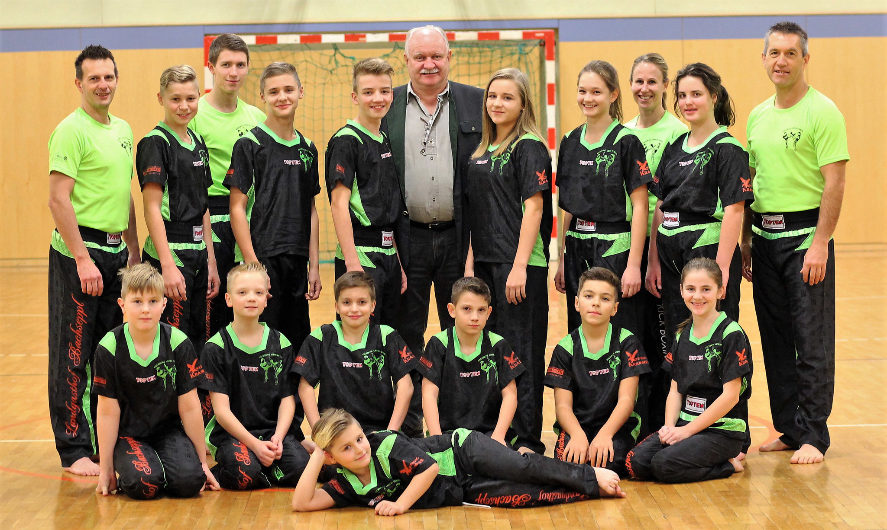

Ich habe viele Aktivitäten denen ich gerne nachgehe, wie zum Beispiel Super Smash Bros. auf meiner Switch zu spielen oder exzessive Mengen an Anime zu schauen. Doch keiner dieser Dinge würde ich wirklich zu meinen Hobbies zählen. Im Gegensatz dazu gibts es wieder einige Sachen die zwar zu meinen Hoobies zähle aber nichgt wirklich mit begeisterung mache, wie zum Beispiel jeden Tag zuhause zu trainieren. Lange Rede kurzer Sinn hier sind die Aktivitäten die ich noch am ehersten zu meinen "Hobbies" zählen würde:
Wie schon angesprochen sind Homeworkouts seit die Pandemie begonnen hat meine Hauptbeschäftigung neben lernen und Aufgabe machen.
Einer meiner anderen Beschäftigungen vor der Pandemie war Kickboxen, was jetzt durch ausgangsbeschränkungen jedoch sehr vernachlässigt wurde.
Wie oben zu sehen ist bestehen meine Hobbies überraschender Weise ausschließlich aus körperlicher Aktivität. Und ich schreibe überraschender Weise weil ich selbst überrascht bin, da ich früher Sport wie die Pest gemieden habe. Doch die Zeiten ändern sich genau so wie auch die Prioritäten, wenn man früher lieber den ganzen Tag Eis gegessen hat, ist man jetzt lieber nicht fett und hat so wenig Rückenschmerzen wie möglich.